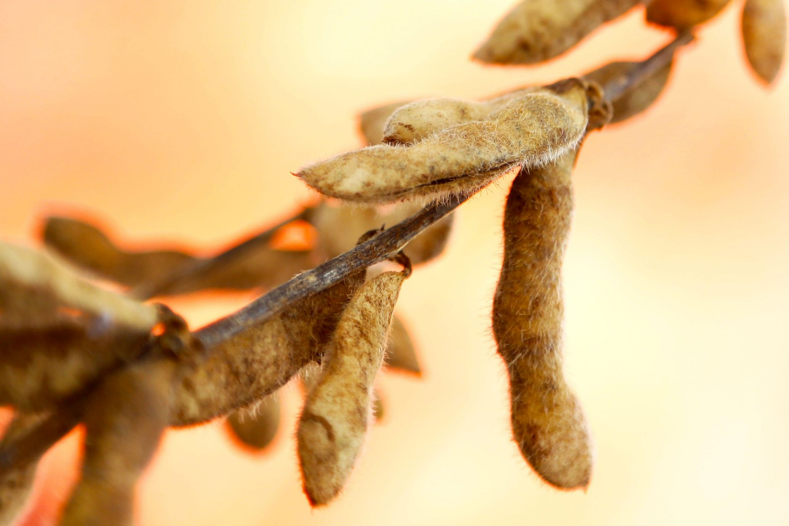

A safra da soja em São José Do Ivaí
O Brasil é um País rico em sua cultura, temos uma agricultura de primeiro mundo, segundo o estudo da EMBRAPA temos a maior area cultivo alimenticia do mundo, E na nossa região, mais especificamente falando, em São José do Ivaí muitos agricultores já iniciaram a plantação da soja em nossa região.
Nosso objetivo: Divulgar informações sobre a safra do soja em nossa região, assim divulgando o trabalho dos agricultores de São José Do Ivaí.
Atualizado em 07/09/2023